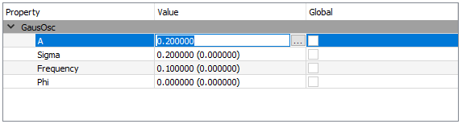

\(\renewcommand\AA{\unicode{x212B}}\)
Fitting Tab¶

This tab is used to evaluate a single fit object, which corresponds to a list of one or more input workspaces and a fit function.
Fitting type Allows you to choose between doing a normal fit or a TF Asymmetry fit. See Calculate Muon Asymmetry for more information about TF Asymmetry mode.
Fit Executes the specified fit.
Undo Fit Undoes the previously performed fit.
Simultaneous Fit This option will perform a fit for multiple data sets, which may share parameters. The simultaneous fit can be performed over a selected run, or selected group/pair.
Select Workspace This drop-down list can be used select the workspace to perform a single fit over.
Covariance Matrix Opens the normalised covariance matrix for the currently selected fit domain.
Fit function browser¶
{kind=link}
Right clicking in the central box will bring up a context menu for adding or removing functions.
Property This is a list of property names, individual functions can be collapsed down for greater legibility.
Value This lists the initial guesses for variables within fitting functions. Variables can be fixed for a given fit from the edit parameter values dialog box (click the ellipsis to the right of the value box).
Global If we are performing a simultaneous fit, parameters for each workspace in the fit can be tied by checking this box.
Fit properties browser¶
Time Start/End Defines the boundary values for the fit calculation.
Minimizer Choose the minimisation method for the fit.
Fit To Raw Data If this is checked it will use the raw data for the fit. If it is unchecked it will use the rebinned data as specified on the home tab.
Evaluate Function As Select if to fit to histogram or point data.